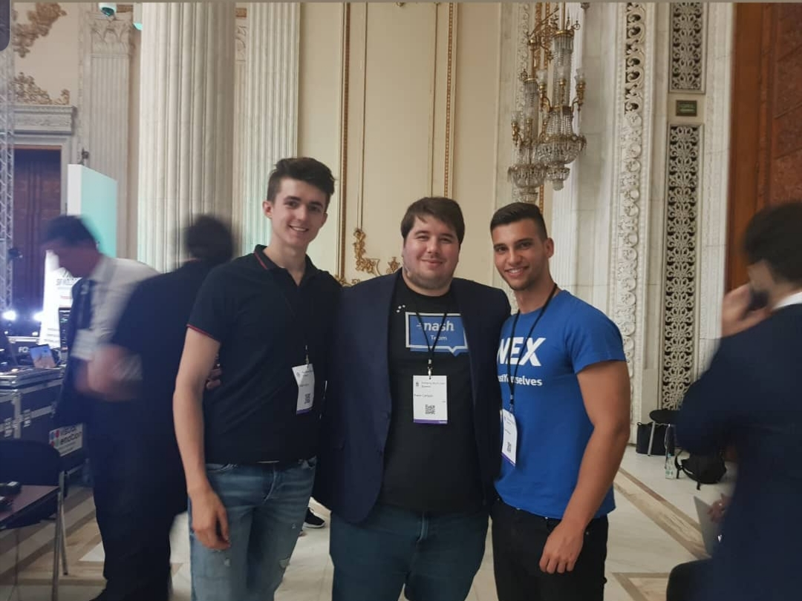

The path I follow.
Hi my name is David Walzer and my passion about innovative technologies like blockchain, machine learning and artificial intelligence began about three years ago.
First it started as a hobby on the investment side (tokenized stocks, cryptocurrencies, …) but afterwards I realized that with disruptive technologies there are no borders of creative thinking and creating solutions for various problems. That’s why I attended many blockchain events across the world like the “Romanian Blockchain Summit” or the “Barcelona Trading Conference” to gain my knowledge in various fields. Moreover, I love to travel and an enjoyable trip with friends to make party, educate yourself and learn about a new culture can be described as a perfect holiday. My enthusiasm about innovational thinking is borderless and my first challenging project in this field was to develop an integrative idea management system for an international car components supplier. Because of this project I learned a lot of the psychological aspects of motivating humans and myself to improve their way of thinking. That’s why self-development plays an important role in my life.
Change and progress, accepting new challenges and making valuable experiences. These are my personal motivations to reach my goal – personal growth.
“making the world a better place” – is a mission which many people have, but the most of it have to figure out how to reach this goal, including myself of course. It is about realizing your own ideas to make impossible things possible and helping others to improve their life quality or their way of thinking .
From my point of view, I choose the developer path not only to acquire a skill which will help myself to achieve this vision, but also to deep dive in technologies, which have the potential to change the world. That’s why one of my main goals for the next 3 years is to gain experience in a blockchain or fintech start-up. To be a developer also means independence. If you have a great idea with the right skill set, you can realize it by your own.
Moreover, I would love to study business informatics abroad at the University of Twente or Maastricht to be surrounded by many international students and exchanging ideas with them. Nevertheless, this depends on my personal situation and which decision has more potential to achieve my vision of making the world a better place.